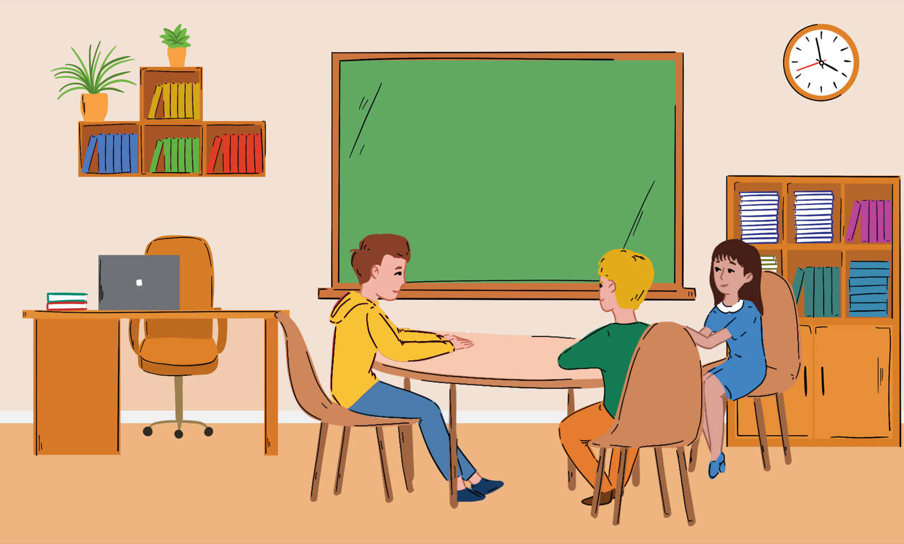

Mjedisi i vendit tim
T’i ruajmë tokën dhe pyjet
Mësuesja po sqaronte se sa të dobishëm ishin drurët në jetën e secilit njeri. Ajo kishte përgatitur një prezantim ku tregohej se sa i dobishëm ishte procesi i fotosintezës, ndërkohë që Mali nuk ishte shumë i përqendruar në fjalët e mësueses. Atij po i kujtohej një ngjarje e vitit të kaluar.
Ndërkohë që Mali po ecte me familjen e tij në një pyll, ata kishin takuar një të njohur që po priste drurë. Mali e dinte që prerja e drurëve ishte e dëmshme, prandaj e pyeti të njohurin:
“O xhaxha, po ti e di se të presësh drurë nuk është gjë e mirë për ajrin dhe jetën në Tokë! Malit i kujtohej mjaft mirë përgjigjja e tij. Ai pati thënë: “Po unë me këtë punë jetoj dhe mbaj familjen”. Në një mënyrë apo tjetër, Mali e kishte pranuar mendimin e xhaxhait dhe ishte ndier keq pse e kishte pyetur.
Tani i dukej momenti i duhur për të ndarë këtë përvojë me mësuesen e tij. Përgjigjja e mësueses e habiti, edhe pse Mali priste që mësuesja do ta kundërshtonte veprimin e xhaxhait. Për çudinë e tij ajo iu drejtua me një pyetje: "Çfarë duhet të bëjë xhaxhai yt, që të kompensojë dëmin e bërë?".
Ishte një pyetje që Mali nuk e kishte menduar. Vërtet, nëse xhaxhai do të mbillte nga një dru të ri, për secilin dru të prerë, atëherë ndoshta do të kompensonte dëmin e tij deri diku.
